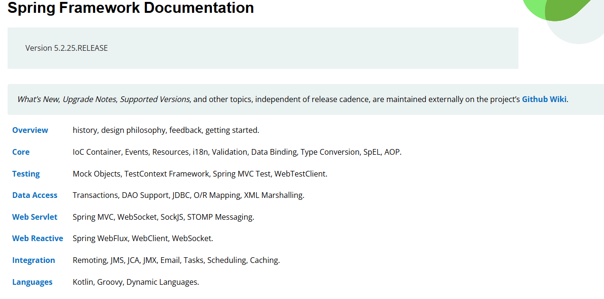
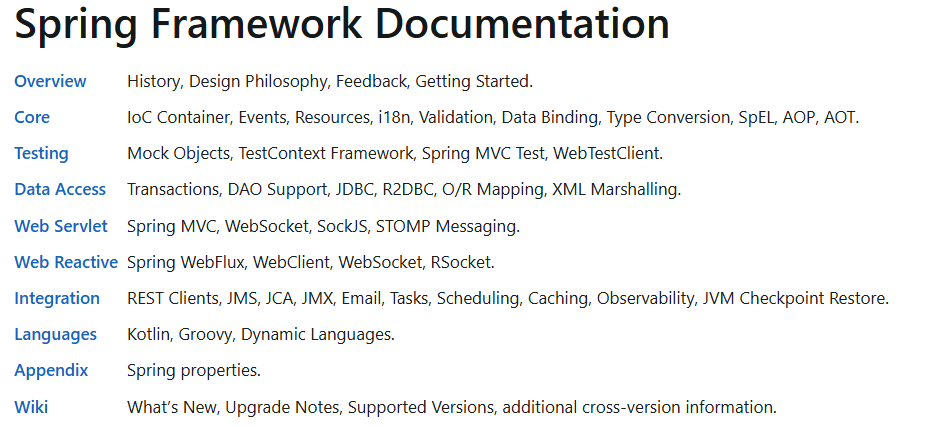

Spring
Spring是⼀款开源的轻量级Java开发框架，旨在提⾼开发⼈员的开发效率以及系统的可维护性。
Spring框架指的是Spring Framework
项目地址：https://github.com/spring-projects/spring-framework
官网地址：https://spring.io/
Spring特点
- 轻量：
Spring是轻量的，基本的版本大约2MB。 - 控制反转：
Spring通过控制反转实现了松散耦合，对象们给出它们的依赖，而不是创建或查找依赖的对象们。 - 面向切面的编程(
AOP)：Spring支持面向切面的编程，并且把应用业务逻辑和系统服务分开。 - 容器：
Spring包含并管理应用中对象的生命周期和配置。 MVC框架：Spring的WEB框架是个精心设计的框架，是Web框架的一个很好的替代品。- 事务管理：
Spring提供一个持续的事务管理接口，可以扩展到上至本地事务下至全局事务（JTA，即Java Transaction API）。 - 异常处理：
Spring提供方便的API把具体技术相关的异常（比如由JDBC，HibernateorJDO抛出的）转化为一致的unchecked异常。
最重要的一点使用的人多，生态完善！！！
Spring的核心组件
目前Spring框架已集成了20多个模块。这些模块主要被分如下图所示的核心容器、数据访问、集成、Web、AOP（面向切面编程）、工具、消息和测试模块。
下图取自spring4.3.30版本的：https://docs.spring.io/spring-framework/docs/4.3.30.RELEASE/spring-framework-reference/htmlsingle/#overview-modules

spring5.2.25版本：https://docs.spring.io/spring-framework/docs/5.2.25.RELEASE/spring-framework-reference/

spring6.1.x版本：https://docs.spring.io/spring-framework/reference/6.1-SNAPSHOT/

Core Container
Spring框架的核⼼模块，也可以说是基础模块，主要提供IoC依赖注入功能的⽀持，Spring其他所有的功能基本都需要依赖于该模块。
spring-core：Spring框架基本的核⼼⼯具类。spring-beans：提供对bean的创建、配置和管理等功能的⽀持。spring-context：提供对国际化、事件传播、资源加载等功能的⽀持。spring-expression：提供对表达式语⾔（Spring Expression Language）SpEL的⽀持，只依赖于core模块，不依赖于其他模块，可以单独使用。
AOP
spring-aspects：该模块为与AspectJ的集成提供⽀持。spring-aop：提供了⾯向切⾯的编程实现。spring-instrument：提供了为JVM添加代理（agent）的功能。 具体来讲，它为Tomcat提供了⼀个织入代理，能够为Tomcat传递类文件，就像这些文件是被类加载器加载的⼀样。
Data Access/Integration
spring-jdbc：提供了对数据库访问的抽象JDBC。不同的数据库都有⾃⼰独⽴的API用于操作数据库，而ava程序只需要和JDBC API交互，这样就屏蔽了数据库的影响。spring-tx：提供对事务的⽀持。spring-orm： 提供对Hibernate、JPA、iBatis等ORM框架的⽀持。spring-oxm：提供⼀个抽象层⽀撑OXM(Object-to-XML-Mapping)，例如：JAXB、Castor、XMLBeans、JiBX和XStream等。spring-jms: 消息服务。⾃Spring Framework 4.1以后，它还提供了对spring-messaging模块的继承。
Spring Web
spring-web：对Web功能的实现提供⼀些最基础的⽀持。spring-webmvc： 提供对Spring MVC的实现。spring-websocket： 提供了对WebSocket的⽀持，WebSocket可以让客户端和服务端进⾏双向通信。spring-webflux：提供对WebFlux的⽀持。WebFlux是Spring Framework 5.0中引入的新的响应式框架。与Spring MVC不同，它不需要Servlet API，是完全异步。
Messaging
spring-messaging是从Spring4.0开始新加入的⼀个模块，主要职责是为Spring框架集成⼀些基础的报文传送应用。
Spring Test
Spring团队提倡测试驱动开发（TDD）。有了控制反转 (IoC)的帮助，单元测试和集成测试变得更简单。Spring的测试模块对JUnit（单元测试框架）、TestNG（类似JUnit）、Mockito（主要用来Mock对象）、PowerMock（解决Mockito的问题比如⽆法模拟final，static，private方法）等等常⽤的测试框架⽀持的都比较好。
Spring的常用模块
Spring Core
核心容器：核心容器提供Spring框架的基本功能。Spring以bean的方式组织和管理Java应用中的各个组件及其关系。
Spring使用BeanFactory来产生和管理Bean，它是工厂模式的实现。
BeanFactory使用控制反转(IoC)模式将应用的配置和依赖性规范与实际的应用程序代码分开
Spring Context
应用上下文：是一个配置文件，向Spring框架提供上下文信息。Spring上下文包括企业服务，如：JNDI、EJB、电子邮件、国际化、校验和调度功能
Spring AOP
面向切面编程：是面向对象编程的有效补充和完善，Spring的AOP是基于动态代理实现的，实现的方式有两种分别是Schema和AspectJ这两种方式
Spring Dao
JDBC和Dao模块：JDBC、DAO的抽象层提供了有意义的异常层次结构，可用该结构来管理异常处理，和不同数据库供应商所抛出的错误信息。
异常层次结构简化了错误处理，并且极大的降低了需要编写的代码数量，比如打开和关闭链接
Spring ORM
对象实体映射：Spring框架插入了若干个ORM框架，从而提供了ORM对象的关系工具，
其中包括了Hibernate、JDO和IBatis SQL Map等，所有这些都遵从Spring的通用事物和DAO异常层次结构。
Spring Web
Web模块：Web上下文模块建立在应用程序上下文模块之上，为基于web的应用程序提供了上下文。
所以Spring框架支持与Struts集成，web模块还简化了处理多部分请求以及将请求参数绑定到域对象的工作
Spring Web MVC
MVC模块：MVC框架是一个全功能的构建Web应用程序的MVC实现。通过策略接口，MVC框架变成为高度可配置的。
MVC容纳了大量视图技术，其中包括JSP、POI等，模型由JavaBean构成，存放于m当中，而视图是一个接口，负责实现模型，控制器表示逻辑代码，由c的事情。
Spring框架的功能可以用在任何J2EE服务器当中，大多数功能也适用于不受管理的环境。
Spring的核心要点就是支持不绑定到特定J2EE服务的可重用业务和数据的访问的对象，毫无疑问这样的对象可以在不同的J2EE环境，独立应用程序和测试环境之间重用。
Spring框架使用的设计模式
简单工厂模式：
Spring中的BeanFactory就是简单工厂模式的体现。 根据传入一个唯一的标识来获得Bean对象，但是在传入参数后创建还是传入参数前创建，要根据具体情况来定。工厂模式：
Spring中的FactoryBean就是典型的工厂方法模式，实现了FactoryBean接口的bean是一类叫做factory的bean。 其特点是，spring在使用getBean()调用获得该bean时，会自动调用该bean的getObject()方法， 所以返回的不是factory这个bean，而是这个bean.getOjbect()方法的返回值。单例模式：在
spring中用到的单例模式有：scope="singleton"，注册式单例模式，bean存放于Map中。bean name当做key，bean当做value。原型模式：在
spring中用到的原型模式有：scope="prototype"，每次获取的是通过克隆生成的新 实例，对其进行修改时对原有实例对象不造成任何影响。迭代器模式：在
Spring中有个CompositeIterator实现了Iterator，Iterable接口和Iterator接口，这两个都是迭代相关的接口。 可以这么认为，实现了Iterable接口，则表示某个对象是可被迭代的。Iterator接口相当于是一个迭代器，实现了Iterator接口，等于具体定义了这个可被迭代的对象时如何进行迭代的。
代理模式：
Spring中经典的AOP，就是使用动态代理实现的，分JDK和CGlib动态代理。适配器模式：
Spring中的AOP中AdvisorAdapter类，- 它有三个实现：
MethodBeforeAdviceAdapter、AfterReturningAdviceAdapter、ThrowsAdviceAdapter。Spring会根据不同的AOP配置来使用对应的Advice，与策略模式不同的是，一个方法可以同时拥有多个Advice。Spring存在很多以Adapter结尾的，大多数都是适配器模式。
- 它有三个实现：
观察者模式：
Spring中的Event和Listener。spring事件：ApplicationEvent，该抽象类继承了EventObject类，JDK建议所有的事件都应该继承自EventObject。spring事件监听器：ApplicationListener，该接口继承了EventListener接口，JDK建议所有的事件监听器都应该继承EventListener。
模板模式：
Spring中的org.springframework.jdbc.core.JdbcTemplate就是非常经典的模板模式的应用，里面的execute方法，把整个算法步骤都定义好了。责任链模式：
DispatcherServlet中的doDispatch()方法中获取与请求匹配的处理器HandlerExecutionChain，this.getHandler()方法的处理使用到了责任链模式。
注意：这里只是列举了部分设计模式，其实里面用到了还有享元模式、建造者模式等
Spring常用的注解
@Controller注解
是在Spring的org.springframework.stereotype包下，org.springframework.stereotype.Controller注解类型用于指示Spring类的实例是一个控制器
使用@Controller注解的类不需要继承特定的父类或者实现特定的接口，相对之前的版本实现Controller接口变的更加简单。
而Controller接口的实现类只能处理一个单一的请求动作，而@Controller注解注解的控制器可以同时支持处理多个请求动作，使程序开发变的更加灵活。
@Controller用户标记一个类，使用它标记的类就是一个Spring MVC Controller对象，即：一个控制器类。
Spring使用扫描机制查找应用程序中所有基于注 解的控制器类，分发处理器会扫描使用了该注解的方法，并检测该方法是否使用了@RequestMapping注解，而使用@RequestMapping注解的方法才是真正处理请求的处理器。
@RestController注解
@RestController注解是@Controller和@ResponseBody注解的组合注解，
@ResponseBody
注解实现将controller方法返回对象转化为json对象响应给客户。
@RequestMapping
用于处理请求url映射的注解，可用于类或方法上。用于类上，则表示类中的所有响应请求的方法都是以该地址作为父路径。
@RequestBody
注解实现接收http请求的json数据，将json转换为java对象。
@RequestParam
该注解类型用于将指定的请求参数赋值给方法中的形参。
它有4种属性
name属性该属性的类型是String类型，它可以指定请求头绑定的名称；value属性该属性的类型是String类型，它可以设置是name属性的别名；required属性该属性的类型是boolean类型，它可以设置指定参数是否必须绑定；defaultValue属性该属性的类型是String类型，它可以设置如果没有传递参数可以使用默认值。
@RequestHeader
该注解类型可以把Request请求中Header中的参数绑定到方法参数上。
@PathVariable
该注解类型可以非常方便的获得请求url中的动态参数。
@PathVariable注解只支持一个属性value，类型String，表示绑定的名称，如果省略则默认绑定同名参数。
@Component
泛指某一个组件，当组件不好归类的时候，可以使用这个注解进行标注。
@Service
用于标注业务层组件。
@Repository
用于标注dao层组件，以便于Spring管理这些类的实例，并且可以方便地进行事务管理。
现在基本不适用此注解，通常使用mybatis的@Mapper注解。
@Valid和@Validated
参数前面加上@Valid注解，表示我们对这个对象属性需要进行验证。
@Validated是在@Valid基础上，做的一个升级版。
@Autowired和@Resource
@Autowired通过类型来实现自动注入bean。
和@Qualifier注解配合使用可以实现根据name注入bean。
@Resource根据name注入bean的，可以通过设置类型来实现通过类型来注入。
| 对比项 | @Autowire |
@Resource |
|---|---|---|
| 注解来源 | Spring注解 |
JDK注解 |
| 装配方式 | 优先按类型 | 优先按名称 |
| 属性 | required |
name、type |
| 作用范围 | 字段、setter方法、构造器 |
字段、setter方法 |
Spring和IDEA不推荐使用@Autowired注解
这个问题实际是Spring和IntelliJ IDEA不推荐在特定的情况下使用@Autowired注解，主要是针对字段级别的注入，不是针对所有的情况。
详细的解释是：
- 代码可读性和维护性
- 使用字段级别的注入使得依赖关系变得不明显，降低了代码的可读性。
- 当依赖关系发生变化时，修改字段级别的注入可能会导致遗漏或错误。
- 测试性
- 字段级别的注入使得依赖项难以替换，这可能导致单元测试变得复杂。
- 使用构造器注入可以更容易地为测试创建模拟对象。
- 循环依赖
- 字段级别的注入可能导致循环依赖的问题，尤其是在复杂的依赖图中。
- 构造器注入可以更好地控制依赖的顺序。
- 官方建议
- 从
Spring 4.0开始，官方文档就推荐使用构造器注入而非字段级别的注入。 - 构造器注入使得依赖关系更加明确，并且可以确保对象在创建时即处于完全初始化的状态。
- 从
在IDEA中，当你使用@Autowired注解时，它不会检查依赖关系是否存在，这可能会导致错误的行为。
在使用@Autowired进行依赖注入时，Spring会自动根据类型来匹配Bean，如果存在多个类型相同的Bean，就会产生歧义。
此时，需要使用@Qualifier注解或者@Primary注解来指定具体的Bean。
Spring还会根据Bean的创建顺序来注入依赖，这种方式无法保证依赖注入的顺序。
替代方案
可以使用@Resource注解替代@Autowired，或以下的替代方案。
- 构造器注入
- 明确地在构造器中声明依赖，这有助于提高代码的可读性和测试性。
- 可以配合
Lombok的@AllArgsConstructor或@RequiredArgsConstructor注解简化构造器的定义。
Setter注入- 通过
setter方法注入依赖，适用于某些特定的情况，比如依赖项是可选的。
- 通过
- 方法参数注入
- 在特定的方法中注入依赖，适用于不需要长期持有的依赖。
构造器注入示例
@Component
public class MyComponent {
private final AnotherComponent anotherComponent;
@Autowired
public MyComponent(AnotherComponent anotherComponent) {
this.anotherComponent = anotherComponent;
}
// ...其他方法...
}